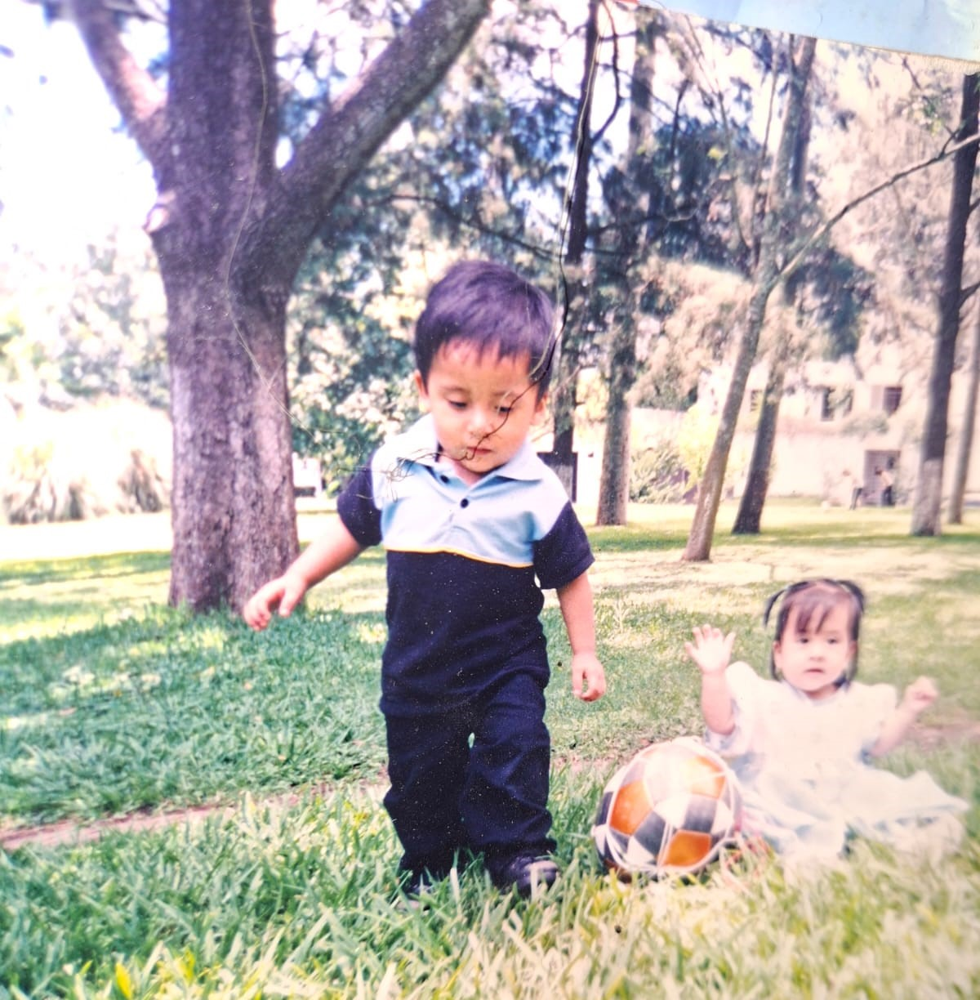
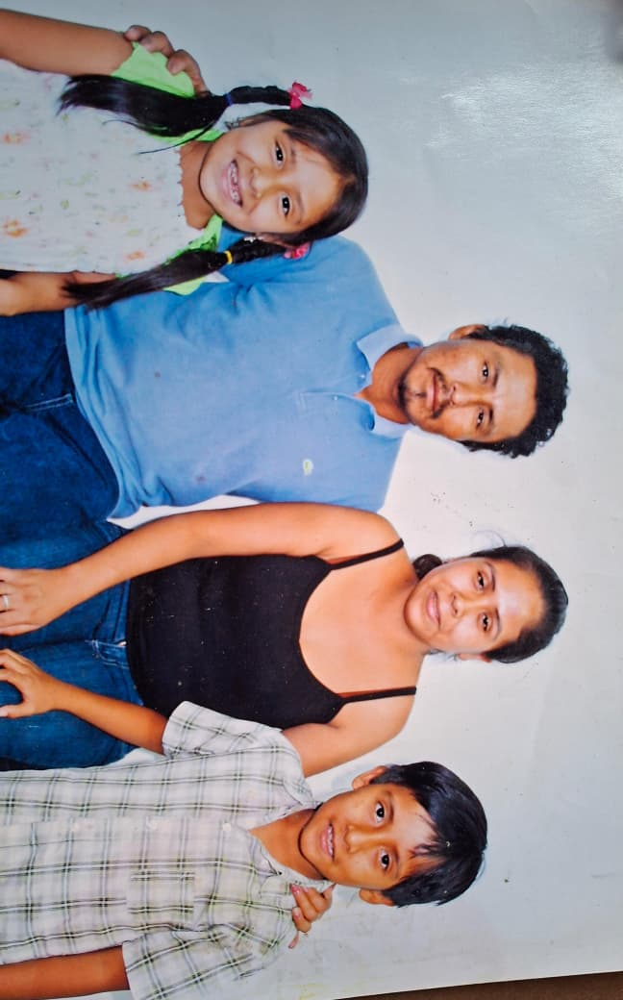
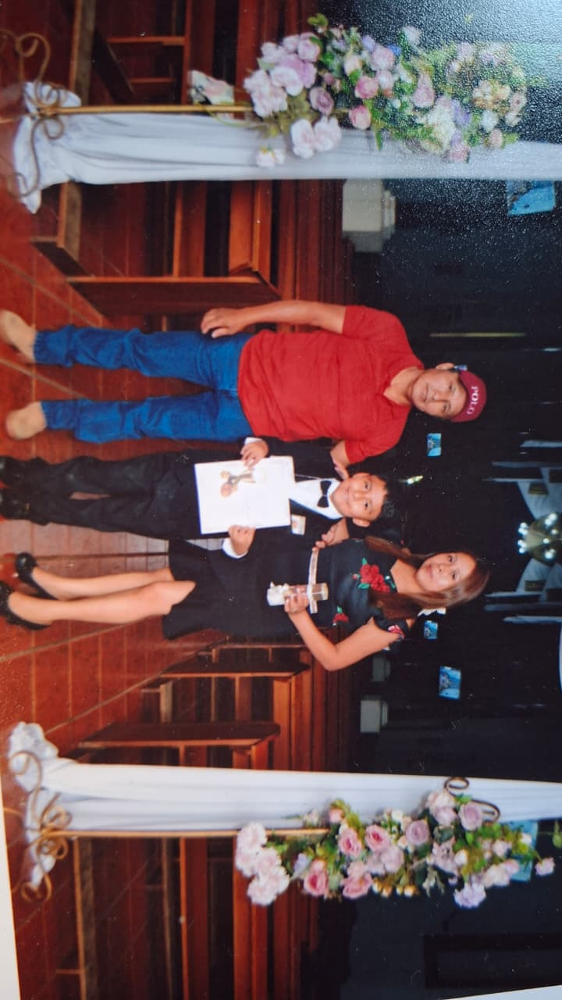
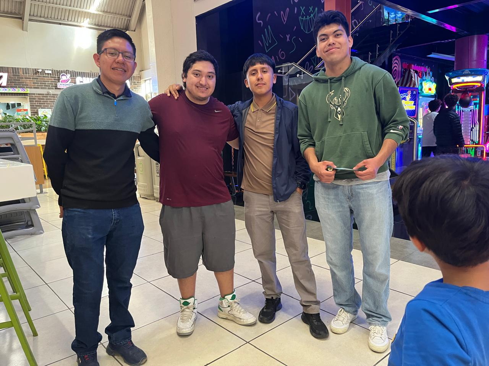

Bueno para resumir a mi familia se componen de :
Papá: El es una persona trabajadora, que nunca nos ha dejado a la deriva , si bien es una persona la cual de pequeño no tuvo muchas oportunidades, el trato de darnos un buen ejemplo y cosas y oportunidades que el nunca las tuvo, sin duda es la persona que mas admiro en mi vida, solo le pido a Dios que me de las fuerzas que el tuvo y el reto de mi vida es ser la mitad de bueno de lo que el fue en la vida y lo que sabe hacer, actualmente yo vivo en la capital solo con él, trabajamos juntos y el soporte para poder salir adelante y no rendirme es el, mi admiración. .
Mamá: La mujer más importante en mi vida, durante un tiempo y malas actitudes mías no tuvimos la mejor relación, conforme el tiempo me di cuenta que yo era el problema, gracias a Dios y a la sabiduría que pedí tanto, pude arreglar las cosas y es mi otra motivación para salir adelante, nunca nos dejo sin un plato de comida, aunque económicamente no estuvimos mal, ella prefería siempre darnos todo a nosotros y ella quedar de manera secundaria, a pesar de la distancia nunca me olvido de ella y siempre que puedo y voy a verla aprovecho para ayudarla en lo que necesite, no tuvo una infancia bonita, y a pesar de eso hizo que la nuestra lo fuera, el amor de mi vida....
Hermanos: primero estaria mi hermana. LESLY ella nacio el 31 de Octubre del 2004, al nacer en Hallowen, comunmente le dijo bruja de cariño, nos llevamos 1 año aproximadamente, ella es la persona que me hizo compañia durante toda mi niñez, una persona que sin duda quiero mucho y estoy orgulloso de lo inteligente que es, y lo trabajadora y el buen camino que ella toma, hemos peleado, gritado y muchas cosas mas, pero a pesar de todas esas cosas, siempre me ha ayudado a realizar todo lo que se me ocurre, ah estado en dias donde eran dificiles economicamente hablando y al igual que yo, trata de salir adelante a pesar de las cosas, ahora mi hermano JOSHUA, el nacio el 20 de Marzo de 2017, cuando me dieron la noticia de que tendria un hermano pequeño, no lo asimile muy bien, ya que me acostumbre a que mi hermana fuera mi unica compañia, asi hasta el dia que pude conocerlo, aproximadamente 1 semana despues de que naciera , ese dia que lo vi y lo tuve de frente, me recuerdo que me agarro el dedo fuerte y no me lo solto, desde la fecha no eh dejado de querer a ese niño, niño por el cual yo daria la vida sin duda, actualmente tiene 9 años y es un niño muy inteligente, tambien no olvido que el es la razon por la cual yo estoy en la Universidad, ya que quiero que el sepa que a pesar de todo y lo dificil que pueda ser , uno tiene que demostrar que se puede salir adelante.



Durante los años uno no entiende eso de , no todos seran tus amigos...
Actualmente eso lo entiendo perfectamente, resumiendo cuento con pocos amigos y aqui nombrare a 3 importantes: VICTOR, LUIS Y CESAR, con los primeros 2 cuento con 8 años aproximadamente de conocerlos , Victor fue el primero que me hablo ya que fue en 2 basico y regresaba a estudiar de donde habia salido 1 año, el desde ese dia senti que me llevaria bien, y con Cesar llevo conociendolo aproximadamente desde 2do primaria, siendo eso en 2012, llevando 14 años de conocerlo y siendo amigos, como todos los amigos, hemos peleado, y tomado bandos, pero a final de todo, tratamos la manera de estar juntos y de llevarnos bien, curiosamente 2 de ellos estudia tambien ingenieria en sistemas, asi que tenemos siempre quien responda las dudas de otros, al igual que mi familia, ellos tambien me animan a no rendirme y no abandonar mis ideales y pensamientos

Dale click para regresar al menu principal